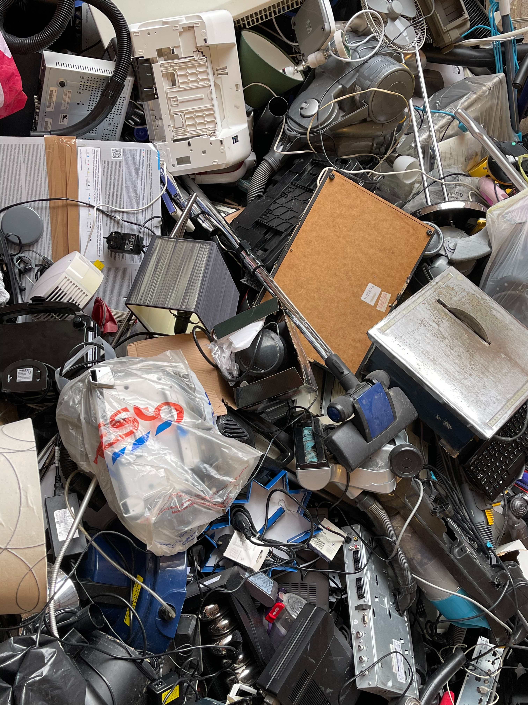

Global Warming
September 29, 2023 by Boris Morris
Global warming is a pressing issue that continues to shape our planet and impact our lives in profound ways.
It refers to the long-term increase in Earth's average surface temperature due to the accumulation of
greenhouse gases in the atmosphere.
Human activities, such as burning fossil fuels, deforestation, and industrial processes,
have significantly contributed to the rise in these gases, primarily carbon dioxide.
The consequences of global warming are far-reaching,
encompassing more frequent and severe weather events, rising sea levels, disruptions in ecosystems,
and threats to food security. Addressing this challenge requires collective global efforts to reduce
greenhouse gas emissions, transition to cleaner energy sources, and adopt sustainable practices to mitigate
the effects of climate change and ensure a sustainable future for generations to come.
As global warming continues to impact our world, it serves as a stark reminder of the urgent
need for global cooperation and environmental stewardship. Taking action to reduce our carbon footprint,
preserve our natural resources, and support innovative solutions is not only essential for the health
of our planet but also for the well-being of current and future generations. By acknowledging the reality
of global warming and working together to combat its effects, we can strive for a more sustainable and
resilient world where the beauty and diversity of our environment can thrive for years to come.
E - Waste
September 29, 2023 by Boris Morris

Electronic waste, or e-waste, has become a pressing environmental concern in our digital age.
It encompasses discarded electronic devices and gadgets, ranging from old smartphones and laptops
to obsolete televisions and appliances. The rapid pace of technological advancement has led to a surge
in e-waste generation, posing significant challenges for proper disposal and recycling.
E-waste contains hazardous materials like lead, mercury, and toxic chemicals,
which, if not managed correctly, can contaminate the environment and harm human health.
Addressing the e-waste problem requires responsible disposal methods, efficient recycling processes,
and public awareness campaigns to encourage the recycling and safe handling of electronic devices.
It is imperative that individuals, businesses, and governments worldwide collaborate to reduce the
environmental impact of e-waste and ensure the sustainable management of electronic products.
Efforts to tackle the growing issue of e-waste must encompass not only effective recycling but also product
design with longevity and recycling in mind. By adopting practices such as repairability, upgradability,
and reducing electronic waste at the source, we can minimize the environmental footprint of our digital
lifestyles. Additionally, promoting the circular economy model, where electronics are reused, refurbished,
and recycled efficiently, can help mitigate the environmental impact of electronic waste while conserving
valuable resources. As the global reliance on electronic devices continues to rise, proactive measures to
address e-waste are essential to protect our environment and preserve the well-being of both current and
future generations.